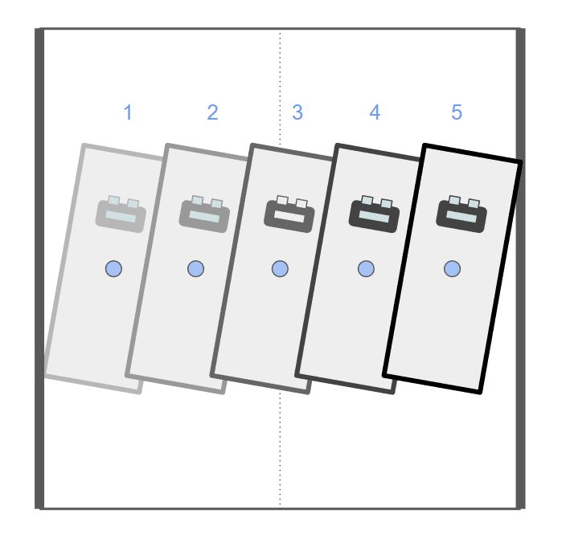
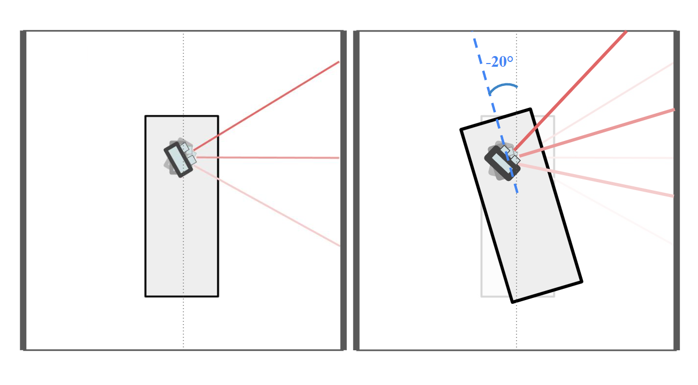
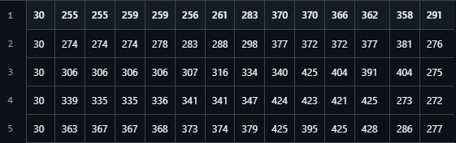
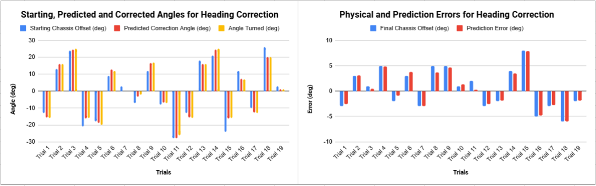
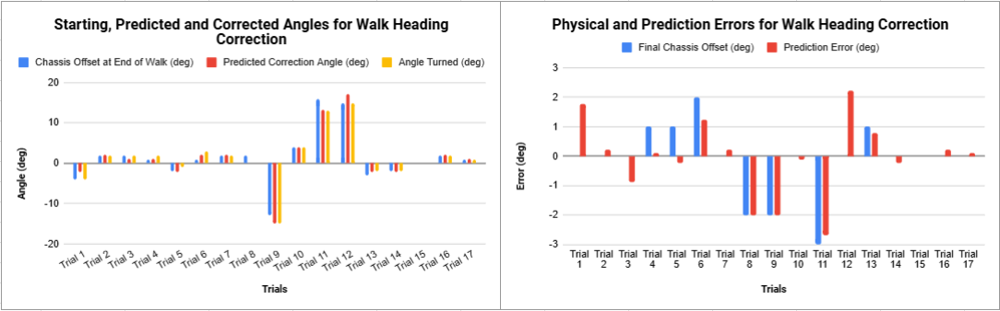

KNN-Based Heading Correction for a Hexapod Robot
Teaching a hexapod to detect and correct its own heading drift using only ultrasonic wall scans and a k-Nearest Neighbors regression model - no extra sensors, just pattern-matching against a hand-collected training set.
Status: Completed · Winter 2025 (ME 301)
Overview
Working with Jack Press for ME 301, we ran into a persistent problem left over from earlier labs: our hexapod's linear walk never went quite straight. Even with an inverse-kinematics gait, the robot picked up a heading offset - and to a lesser extent a lateral drift - on almost every walk, most likely from foot skidding and small actuation inconsistencies that are nearly impossible to fully characterize. Since heading offset dominated the error, we scoped this project down to one learned behavior: have the robot scan the walls of a confined space, like a maze corridor, and use a k-Nearest Neighbors regression model to predict and correct its own chassis offset from those scans.

The five linear-offset configurations used at every angular offset when building the training set - from hugging the left wall (1) to hugging the right wall (5).
Challenge
The robot has no absolute heading sensor of its own, so the only information available to correct itself is geometric: how far away are the walls, at a set of known scan angles, given the robot's actual position and orientation inside the tile. That signal is confounded by two things at once - the chassis's rotational offset, which is what we actually want to measure, and its linear offset within the tile, which changes the raw distances without saying anything about heading. Any model we used would have to learn to see through the linear-offset noise and isolate the angular signal, from a feature vector built out of a single ultrasonic sensor taking sequential scans rather than a full instantaneous LIDAR sweep.

No offset (left) vs. a -20° chassis offset (right): the 13-ray ultrasonic scan pattern shifts distinctly with heading, which is the signal the model has to learn to read - even with linear offset also changing the picture.
Approach
We chose k-Nearest Neighbors specifically because it's simple, interpretable, and well suited to a small, dense dataset: for regression, KNN predicts a continuous label by averaging the labels of the \(k\) closest training points to a new input, which is exactly what's needed to interpolate a chassis offset for configurations that weren't explicitly in the training set. Each training example is a 14-value vector - the chassis offset label, followed by 13 ultrasonic range readings taken every 5° between 0° and 60°. The training set covers 9 angular offsets (-30° to 30°) across 5 linear-offset positions, in two spatial configurations (one wall only, and one wall plus a front wall), for 90 total data points.

Five raw training rows, all logged at a 30° chassis offset - the five rows correspond to the five linear-offset configurations shown above. Each row's 13 values are the ultrasonic readings that make up that example's feature vector.
We tuned the model along four axes: the value of \(k\) itself; the size of the input feature vector, by dropping scan values at user-defined modulus positions to see how much resolution the model actually needed; the resolution of the training set (denser vs. sparser angular sampling); and the distance metric used to rank neighbors (Euclidean vs. cosine). Ground truth for every training and test example was measured with a compass, which turned out to be its own source of noise - more on that below.
Result
Tested on 19 held-out chassis offsets with a randomized linear offset (mimicking the uncertainty the robot would actually have mid-walk), the model predicted the correction angle with an average error of 3.15° (σ = 1.94°), and the robot's actual physical turn tracked that prediction closely - the final chassis error after correcting essentially matched the prediction error one-for-one. Every prediction got the sign of the correction right, even when the magnitude was off, and interestingly, adding finer angular resolution between 10° and 20° in the training set didn't noticeably improve accuracy in that range.

Static correction test (19 trials, held-out offsets): predicted correction closely tracks the physical turn (left), and final chassis error tracks prediction error almost exactly (right).
The more meaningful test was correcting heading drift after an actual walk, which is what the behavior is for. There, the model performed even better - 0.88° average prediction error and 0.71° average final chassis error - correcting the roughly 2° of drift a normal walk accumulated, and even recovering starting offsets as large as 15° down to within about 3°.

Walk heading-correction test (17 trials, including missing-wall segments): tighter errors overall than the static test, since the drift being corrected was smaller to begin with.
The biggest confound was the compass itself: readings visibly drifted while the ultrasonic sensor was scanning, almost certainly from electromagnetic interference, which makes some of the "ground truth" labels suspect - and means the model may genuinely be more accurate than the numbers above suggest. Looking ahead, a natural next step would be an adaptive-resolution training set - coarser sampling for large angle corrections, finer sampling near zero - paired with a two-stage correction (a rough turn followed by a precise one), which could improve small-angle accuracy without growing the dataset.
Video Demo
Static heading correction: the hexapod scans the walls and turns to correct a commanded chassis offset.
Walk heading correction: the hexapod walks a maze segment, including a section with a missing wall, then corrects its accumulated drift.
Full Report
The full write-up includes the literature review on ML in robotics, the complete data-collection procedure for both spatial configurations, the four tuning strategies explored for the KNN model, and the full trial-by-trial tables behind both result charts above.